My Playlists
Tune into what I've been listening to recently
 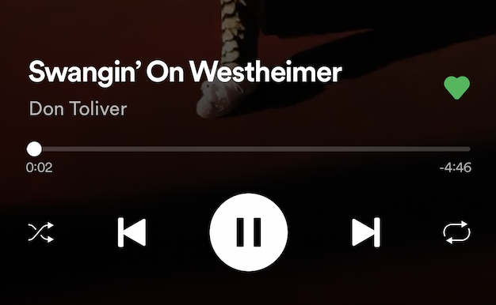
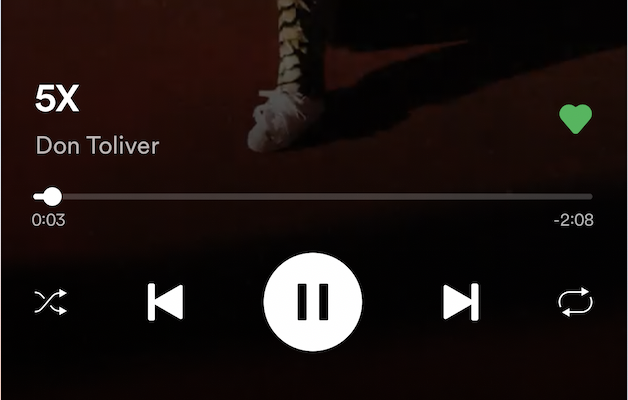
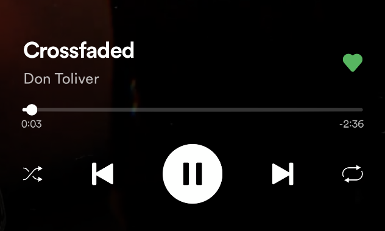
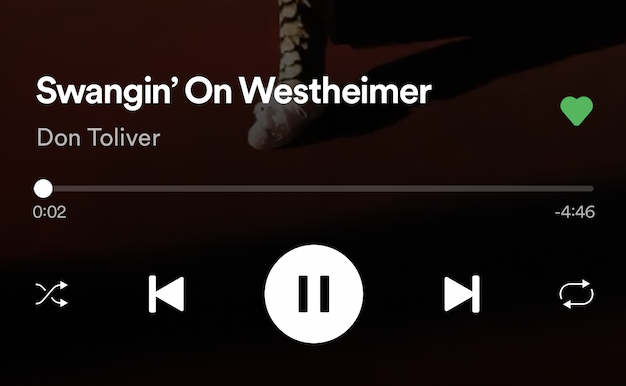
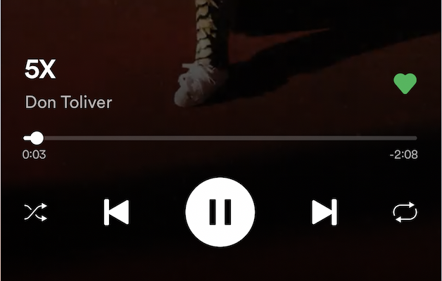
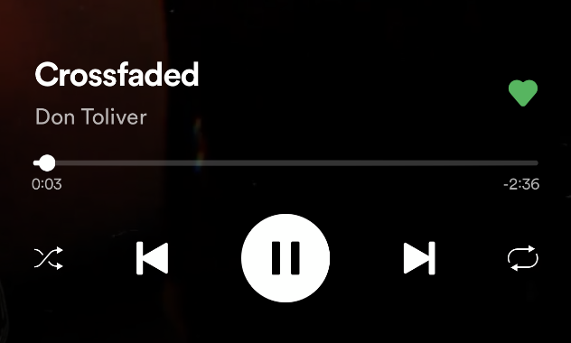
Caleb Zackery “Don” Toliver is a rapper, singer, and songwriter from Houston, Texas. His father was a rapper during the Swishahouse movement in the early 2000's, and would commonly play music around him growing up. Don Toliver began his musical career in May 2017 and had no musical experience prior to releasing music in this year.
Solana Imani Rowe, known as SZA, is an American singer and songwriter. She began making music in the early 2010s. SZA is a neo soul singer who is seen as a distinct force in contemporary R&B. She has set herself apart with a vulnerable and casually poetic songwriting style and a voice conveying a multitude of emotions. Her songs often revolve around themes of sexuality, nostalgia, and abandonment.
Christopher Brent Wood, known as Brent Faiyaz, is a contemporary R&B singer, songwriter, and producer. He started making music at the age of 12. He has been in the industry since the mid-2010s as a solo artist and as one-third of Sonder. Brent Faiyaz got started with SoundCloud uploads and within a couple years settled in Los Angeles to further his career.
 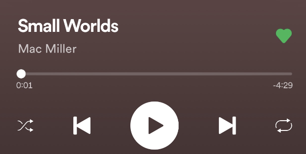
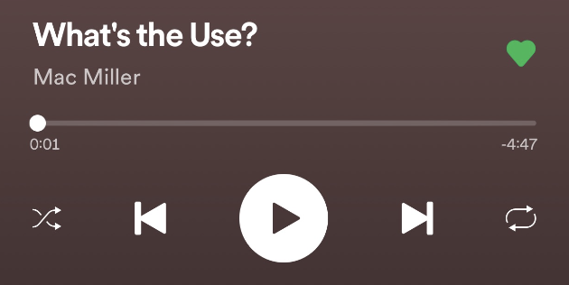
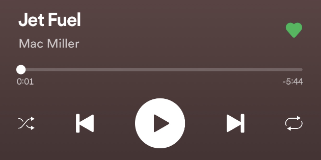
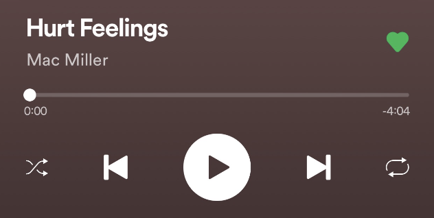
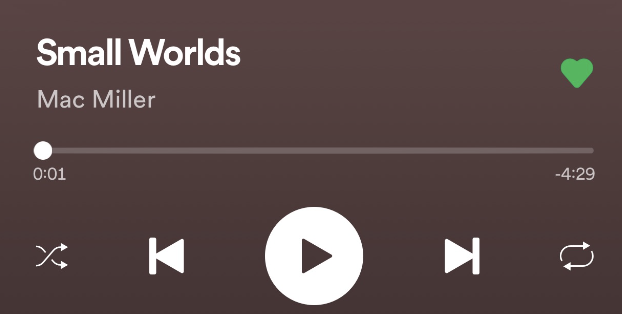
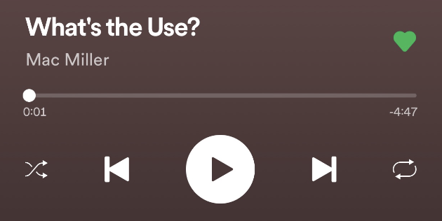
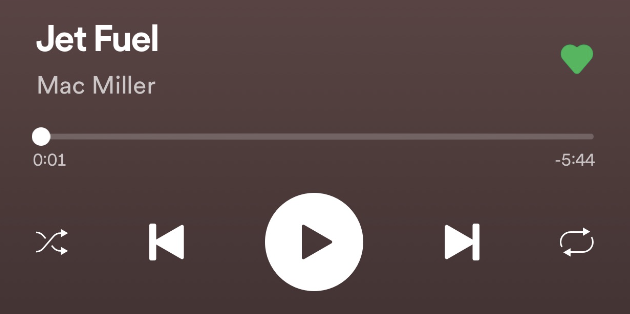
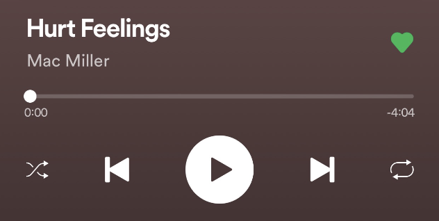
Malcolm James McCormick, known as Mac Miller, was an American rapper and record producer. At the age of 15, he began his career in hip hop in 2007. In 2013, he founded the record label imprint REMember Music. He also served as a record producer for various artists, including himself. Mac Miller struggled with substance abuse and depression and often referenced his struggles in his lyrics. On September 7, 2018, Mac Miller died from an accidental drug overdose of cocaine, fentanyl, and alcohol at his home at the age of 26.